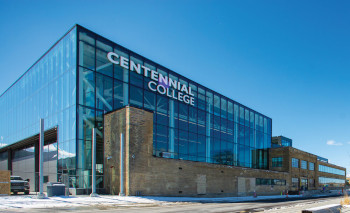

Eles oferecem mais de 160 programas de estudo, entre os quais certificados, diplomas, pós-graduação e bacharelado. Portanto, esta faculdade possui uma das mais amplas séries de programas universitários em tempo integral do Canadá.
O College Seneca sempre se posiciona como uma instituição líder no ensino superior e com aprendizagem centrado no aluno, e é considerada por muitos como um dos melhores colleges de Toronto.
A Humber foi premiada por sua excelência em internacionalização, em reconhecimento aos seus esforços para incluir recursos para estudantes internacionais em vários aspectos de seu Plano Estratégico. Estudantes internacionais de mais de 138 países ao redor do mundo escolheram Humber como destino educacional devido à qualidade dos serviços, programação e acadêmico, entre outros motivos.
O Centennial College é o primeiro college comunitário de Ontário, com cinco campus na área da grande Toronto. O Centennial é reconhecido como uma das instituições pós-secundárias com maior diversidade cultural no Canadá. De fato, tem mais de 9000 estudantes internacionais e de intercâmbio todos os anos.
